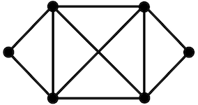

Learn something...
By Vee
The garden is adorned with beautiful trees bearing large fruits and delicious vegetables found all over. They are always a reliable source of food. The ground is covered in lush, green grass that stretches continuously. The weather is always sunny and warm, just enough for you to feel the sun touch your skin without it being too harsh. The garden carries a sweet fragrance, with the mixed scent of citrus trees creating a wonderful aroma.
With the trees comes a large population of animals. There are birds of various species, insects ranging from small to large, and many types of rodents roaming the ground. They all make unique sounds and leave distinct tracks. In the middle of the garden, a babbling creek runs, filled with fish and cold, clean water. Its soothing sound complements the peaceful environment. This garden stretches as far as the eye can see.
We have never seen the creators of this garden. To pass the time, we imagine their appearances and backgrounds. We envision them as beautiful deities with long hair and billowing clothing. They float down and admire their sacred bill, which prominently sits at the garden's center.
It states in perfect lettering:
I will never leave. There have been people who simply considered it and never came back. Leaving is against the rules set by the creators. I hear that life outside is hard. Trusting the unknown is difficult, but it's easier than trusting myself. I cannot imagine a life outside the garden; imagination feels pointless. Making decisions takes too much effort, and here decisions are made for you. It is like a continuous vacation for the brain.
I have never seen the outside. But then again, I trust the creators. They have never done anything to harm me or the other residents. They have provided us with food, water, and everything we could possibly need. I have never had a good reason not to trust them.
But... what are these thoughts I am having?
By Vee
There is a cave where people have been imprisoned since they were children. These prisoners are chained by their legs and necks to the wall. This forced them to face the wall in front of the cave. They couldn’t look at any other part of the cave, each other, or themselves. Behind the prisoners is a fire. People who aren’t prisoners cast shadows and make sounds. The prisoners believe these sounds are the shadows talking. These shadows are the reality for the prisoners because they don’t know anything else. Since they can’t see behind their back, they do not know the shadows are just shadows.
Many believe that if the prisoners were freed, they would continue to believe the lies of the cave. Let’s say a man was taught the truth and later freed from the cave. The light from the fire would hurt his eyes. This would make it difficult for him to see the objects and people creating the shadows. He wouldn't believe it if he were told that the fire and the objects were real, not the shadows. Most likely the freed prisoner would turn away and keep watching the shadows. He would escape the harsh reality by turning away from the things he could look at and understand. He would believe that the shadows are more understandable than the truth. For them it was the most explainable at the moment.
If the prisoner were to be dragged out, he would go through a slow progression of adapting to the real world. His eyes would first adjust to the light of the sun. This can allow him only to see shadows. Gradually he can see the reflections of people and things in water. This continues with the ability to see people and things themselves. Eventually, he can look at the stars, moon, and the sun. Of course, he will come back and tell the others about what he saw. He would pity them as they are unable to escape. Little does he know that they do not wish to be freed. The shadows are all they have ever known and they are unaware of the splendor of the outside world. The returning prisoner's eyes would have become accustomed to the light. The darkness would be blinding when he re-entered the cave. The prisoners would assume that the journey had harmed him and that the outside was harmful. Many assumed that the prisoners would never leave.
By Vee and Gethen
My body has no scars.
I cannot leave. Or can I?
I love everything about this palace but I am overwhelmed with obligation to love it.
This palace is too big to call home.
My thoughts have devolved into simplistic commands to my body, speckled with feral hopes of escape.
My parents love is suffocating.
The result of tender opulence is monotony...
monotony,
monotony,
monotony.
What is light without its absence? What is understanding without knowledge? What is knowledge without experience?
The bedroom on the fifth floor to the right has been mine since the day I was born. It has always been a welcoming space. A bed with a cloth top sits in the corner, made perfectly and drenched in the clean smell of perfumed soap. The ceiling is made of dark wood beams, and the walls are draped in elegant wallpaper. A matching desk and hand-embroidered tuffet are next to the bed. The desk holds a quill with thick, blue ink. A piece of blank paper taunts me if I stare at it too long. The only sound I can hear is an unidentifiable bird singing to itself—-a comfort that costs an early morning. The overwhelming incense with strong, floral tones has remained the same for many years. The smell creates nausea in most, but the flat smell of grass outside drowns it out, making it bearable for a few. Above it all, a large window frames the unreachable town in all its glory.
The town is full of large, brownish structures with red accents. Steep, snow-covered mountains mark the borders. They are jagged and much larger than life lived in the palace. The mountains witness the creation of success and the ultimate, untimely fate of suffering. Stratocumulus-esque clouds often sit above these peaks. Gorgeous hills and tall trees sweep throughout. The town has many steps and small mud homes covered with dried grass. These alluring features have only expanded exponentially in the past few years.
I hesistate. I ponder writing down what the voice in my head commands... "Your palace is furnished with selfish thoughts... you are compelled to leave your castle."